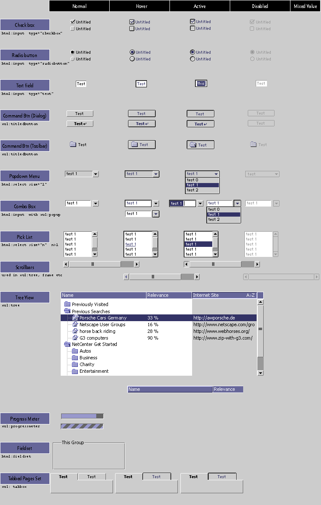

|
|
Platform-neutral widgets look
(and some feel) Specification, Netscape User Experience Group
Last modified by German Bauer Aug 15,
1998
Changes made since Jan 1999:
Minor cleanup; based on more great feedback, cleaning up default
colors: dark tinge now always #666666, light tinge white and disabled tinge
is #999999, default selection background is now always 333366 with white text.
Cleaned up popup/combobox widgets, added tree widgets and scrollbars.
Changes made since Dec16:
Minor cleanup; based on great feedback from mozilla.org, the XPFE
group and other assorted 'users' weI have refined the first stab at a platform
neutral widget kit. Changes from the first version in particular are making
the normal (non-moused-over) state of the widgets less camouflaged.
Goals for platform neutral widget design:
- Simple is good. Let the widgets be less salient when the user is
focussed on content, frame and hilite only when mouse is over or element has
the focus
- work well with any HTML 4 setting such as custom bevel width and
custom widget backgrounds(which essentially excludes GIFs to draw these widgets)
- Recognizable, yet independent Rather than re-inventing the wheel
we leverage known appearances from the OSes. Yet the widgets should look different
enough so users would not expect full behavior compliance with OS.
- Web-like, mesh well with content, use colors and hilite schemes
known from links and toolbar buttons today
- Environment neutral, that is colors used in widgets can be derived
off the page's background, hilite and text color styles
- draw color values from the browser safe palette
- promote an internally consistent look (and later feel too) among
the widgets
TODO: Focus state will be added shortly!

older
version lives here
|